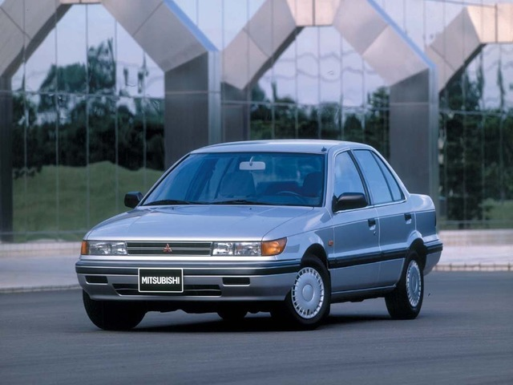

<html>
<meta charset="utf-8">
<head>
   <style>
body {background:url("https://hdwallsbox.com/wallpapers/l/1920x1080/54/cars-mitsubishi-lancer-evolution-vi-1920x1080-53506.jpg");color:white;}
   .gost {
    color: red;
    font-weight: bold;
   }
     .term { border-bottom: 1px dashed red;}
<title>Mitsubishi Lancer</title></head>
<body>
<h1><p align="center">Mitsubishi Lancer 6</p></h1>
<br> <h2>Начал выпускаться только в 1991, чем вызвал ещё больший разрыв между Mirage и Lancer.</h2>
<br< <h2>Хотя оба были построены на той же самой платформе, седан Lancer получил отличающиеся от четырёхдверного Mirage боковые панели кузова.</h2>
<br> <h2>Lancer шестого поколения продавался под маркой Протон Wira с кузовами седан и 5-дверными модификациями автомобиля с открывающейся вверх задней дверью (универсал), в Малайзии в 1993 с двигателями рабочим объёмом 1.3, 1.5, 1.6 и 1.8 L.</h2>
<br> <h2>Некоторое время двухлитовые дизельные модели также можно было приобрести.</h2>
<br> <h2>В настоящее время, автомобиль снят с производства, как наиболее долго бывший на конвейере моделей марки Proton в Малайзии после Proton Saga, которая также основана на предыдущей модели Lancer. </h2>
<br> <h2>Proton Wira был недавно заменён последней моделью Proton, Proton Person.</h2>
<p><a href="index.html"></p>
